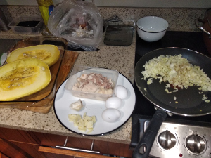
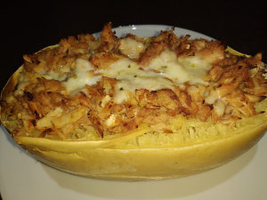

Spaghetti Squash
 
Ingredients: * Spaghetti squash, meat (whatever you want), veggies (whatever you want), spices
How to make it: * Bake the squash for 40 min on 400 * Cut everything very tiny and bake in the over for 45 minutes at 400 f * Stir fry whatever you want * Add whatever on top of squash
Good job, you are awesome.